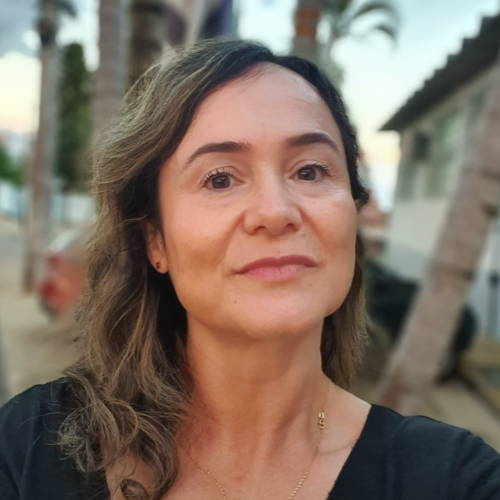

Simone Furlan
Minha jornada no yoga começou em setembro de 2018, com 47 anos. Tive que parar de participar das aulas na academia quando veio a pandemia em 2020, o que não me impediu de continuar praticando em casa e foi o que me deu suporte naquele período difícil! Agora estou concluindo o curso de instrutora de yoga e é o que eu quero pra vida toda! Amo demais 💕